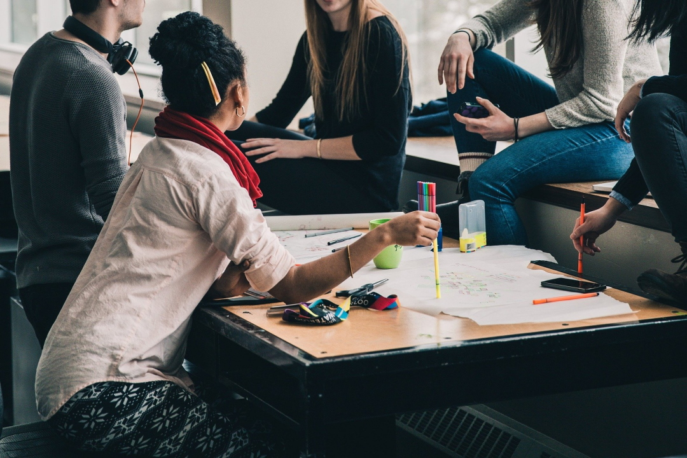

Overgangen fra videregåendeelev til student
Vi er tre studenter fra dataingeniørlinja på OsloMet. Her kan du lese om hvordan vi synes overgangen fra videregåendeelever til studenter var.
Les mer
Accessibility
Da vi skulle lage denne nettsiden, måtte vi planlegge godt for at den skulle bli accesible for alle typer brukere. Det kan du lese mer om her.
Les mer

Våre beste tips
Det er mye hardt arbeid å være student, men man må også huske på å ha det gøy! Her har vi delt våre beste tips til ting du kan gjøre for å koble av under studenttiden.
Les mer